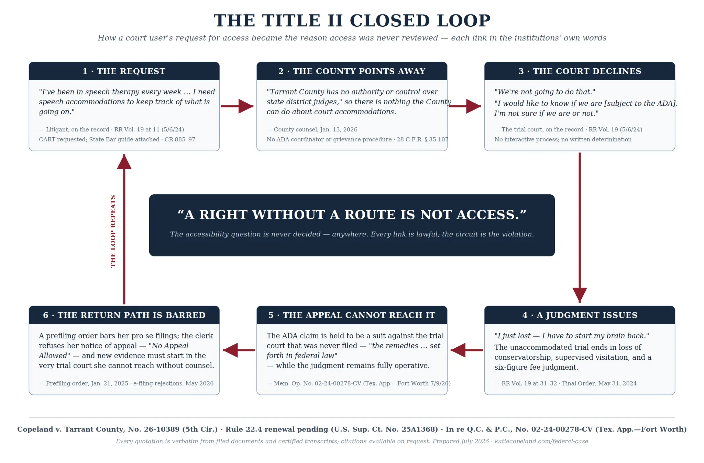

In the County's Own Words
Every quotation below is verbatim from the County's written communications and open-records responses. Each image links to the underlying document.
The Closed Loop

The Record
Complete Indexed Record Packet (226 pp.)
State trial court (231st Dist. Ct.)
- Order on Second Amended Motion for ADA Accommodations (CR 758), May 6, 2024 [Available on request]
- Reporter's Record Vol. 19 excerpts (accommodation presentation & ruling), May 6, 2024 [Available on request]
Texas Court of Appeals (No. 02-24-00278-CV)
- Memorandum Opinion, July 9, 2026
- Judgment
- Motion for Rehearing (filed July 23, 2026, pending)
Fifth Circuit (No. 26-10389)
- Order of May 6, 2026 (Judge Haynes would grant temporarily)
- Order of May 20, 2026 (Judge Haynes would grant reconsideration)
Supreme Court (No. 25A1368)
- Emergency Application for an Injunction Pending Appeal as filed June 4, 2026
- Rule 22.4 Renewal Letter, June 30/July 1, 2026
- Docket link
Merits briefing
- Appellant's First Amended Opening Brief (Aug. 15, 2025)
- Appellees' Response Brief
What this record still needs. The trial-court record contains treating-provider evaluations (speech-language pathology findings of moderate cognitive-linguistic deficits; physician letters documenting mild cognitive impairment and abnormal brain MRI). It does not yet contain a forensic expert report establishing why CART specifically is necessary for effective communication under 28 C.F.R. § 35.160. That report is being commissioned now. Counsel evaluating this matter should assume the structural/administrative claim is fully documented and the individual-necessity showing is in progress.
Doctrinal Map
- Tennessee v. Lane, 541 U.S. 509 (2004) — Title II applies with full force to access to the courts.
- Crawford v. Hinds County, No. 20-60372 (5th Cir. June 16, 2021) — structural courthouse failures support prospective relief.
- Luke v. Texas, 46 F.4th 301 (5th Cir. 2022) — inability to meaningfully participate is itself the injury.
- Strife v. Aldine ISD, No. 24-20269 (5th Cir. May 16, 2025) — delay in the interactive process can itself deny accommodation.
- A.J.T. v. Osseo Area Schools, 605 U.S. 335 (2025) — no heightened intent showing; deliberate indifference suffices.
Representation Asks
- Amicus under FRAP 29 in No. 26-10389 (estimated 10–20 hours; the structural record is assembled).
- Consult or co-counsel on the Fifth Circuit merits briefing.
- One referral name — Texas trial-level counsel for a properly built Title II action against the County, or family-court counsel for a modification carrying post-judgment medical evidence.
Reply by email; the complete indexed record goes out same-day: Katie@KatieCopeland.com
Procedural Posture
| Date | Court / Action | Impact |
|---|---|---|
| May 2024 | State Trial Court (231st Dist. Ct.) | CART denied; judgment issued. |
| Jan 2025 | State Trial Court (231st Dist. Ct.) | Prefiling order bars new pro se filings. |
| Apr 2026 | Tarrant County Administration | Written admission of no ADA infrastructure. |
| May 2026 | Fifth Circuit (No. 26-10389) | Emergency relief denied; Haynes dissents twice. |
| Jun 4, 2026 | Supreme Court (No. 25A1368) | Emergency Application filed (Justice Alito). |
| Jun 11, 2026 | Supreme Court (No. 25A1368) | Application denied. |
| Jun 30, 2026 | Supreme Court (No. 25A1368) | Rule 22.4 Renewal filed (Justice Sotomayor). |
| Jul 9, 2026 | Texas Court of Appeals (No. 02-24-00278-CV) | Affirmed; routed ADA claim to federal law. |
| Jul 23, 2026 | Texas Court of Appeals (No. 02-24-00278-CV) | Motion for Rehearing filed (pending). |
| Pending | Supreme Court of Texas | Opens when rehearing is decided. |
Last updated: July 27, 2026